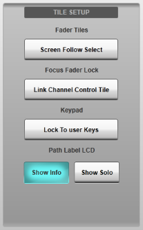
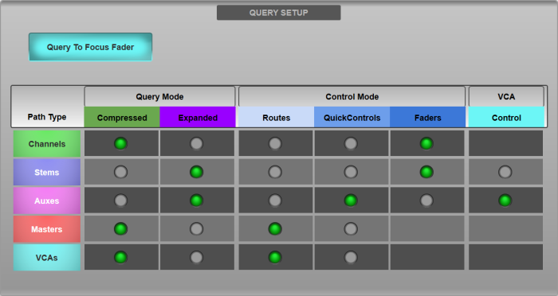
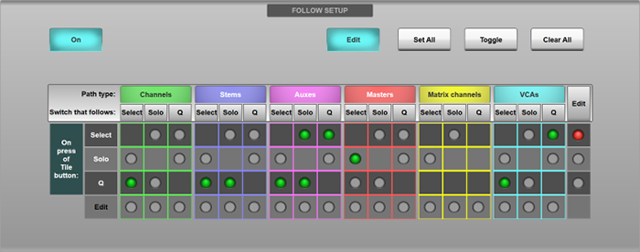

The Options can be found in MENU > Setup > Options.
The following pages detail the settings in each Options tab:
CONSOLE Options
SYSTEM Options
SURFACE Options (this page)
USER Options
USER KEYS Options
REMOTE Options
NETWORK Options
DAW Options
External Control Options
Surface Options
These settings relate to control surface-specific options such as Query configuration and Follow Modes.
Surface Options are found in MENU > Setup > Options > SURFACE tab.
Tile Setup
Fader Tiles
Enabling Screen Follow Select causes the Fader Tile on which the last Select button was pressed to be automatically called to the main screen.Focus Fader Lock
The Focus Fader in the Master Tile may be locked to a specific channel path, as described in the Control Tile section. The Control Tile may also be locked to that channel if the Link Channel Control Tile button is enabled in the Focus Fader Lock section of the User Options page.Keypad
The Lock To User Keys button prevents the keypad on the Master Tile from becoming a numeric keypad when the on-screen keyboard is enabled. This allows any user-defined functions assigned to the keypad to be available at all times.Path Label LCD
The bottom line of text on the path label LCD can display either information about the path assigned to that channel strip (path type, number and format) or solo bus routing information. Use the Show Info and Show Solo buttons to toggle between the two displays.
Query Setup
This section contains settings for Query. Information on Query use and setup can be found in the Query page.

Select/Solo/Query Follow Options
The Follow Setup section allows linking, or Following, of various button combinations on the Fader Tiles. This allows, for example, paths to be Soloed automatically whenever their Select button is pressed (or vice versa).

To configure Follow modes, first enable the Edit button.
Three rows correspond to the hardware Select, Solo and Q (Query) buttons on the Fader Tiles. The columns refer to which button should follow, on press of the hardware button. Columns are arranged by path type (Channels, Stems, Auxes etc.), allowing different Follow modes for different path types.
Enable the buttons in the grid corresponding to which function (column) you would like to follow on press of a hardware button (row). For example, to enable Solo Follow Select for Auxes, locate the Solo column in the Auxes section and press the button in the intersection between that column and the Select row.
Use the buttons in the Edit row and column of the grid to select entire rows and columns, then use the Set All, Clear All or Toggle buttons to alter the state of the selection.
Useful Links
CONSOLE OptionsSYSTEM Options
USER Options
USER KEYS Options
REMOTE Options
NETWORK Options
DAW Options
EXTERNAL CONTROL Options
Query
Index and Glossary